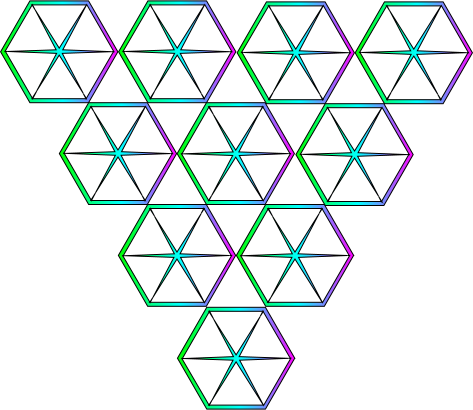

Pick a topic
First you will need an svg file. This will be a file that you add to your directory. Here is one that I created: 
Now that you have your svg file, you can add it to your HTML file just like you would an image, and assign it a class
to apply specific CSS properties.
Lets say you want to cut this object shape out of the background, to create a sort of outline or silouette.
I have created a div element with a class="bgone" property in CSS. To use the svg file on this element,
make sure the element it is being applied to has a height, width, and background color property so you
see the changes. Here is what that might look like:
So, what is happening here?
So, without having extensive animation knowledge, you can do some pretty cool stuff. A nice website for
finding some animations is:
Animania
If you really wanna have some fun, try layering the clip paths and divs inside eachother, you can stack them to
make wild patterns. The application here is just for fun, and becuase we can! Don't forget the CSS :before and :after
methods for some extra spice.